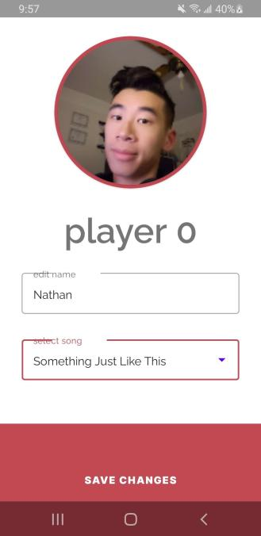
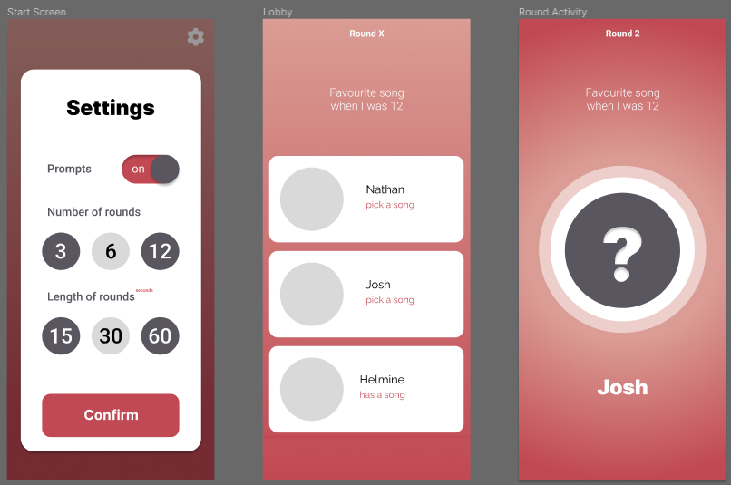
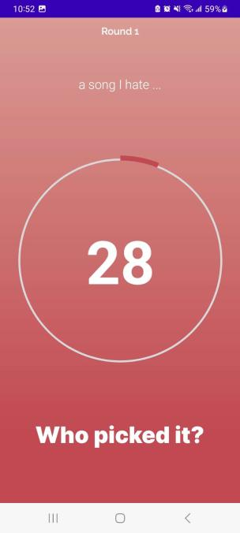

IAT 359: Mobile Computing was a class centered around the design and development of mobile apps. All of the work was coded on Java for Android devices. For the course project, my partner and I created a music guessing game that followed the project’s criteria while expanding our skillset with integration with the Spotify API.
After a strong initial idea, my partner took it a step further and we proceeded to work with the Spotify API with our app. This provided our app with many different utilities including music streaming, search functions for songs and artists, and temporary storing of the selected songs. With our minimal experience with APIs and the Android Studio framework, we struggled to put our plans into motion early on. Setup and authentication made it difficult to start. Additionally, finding a balance between the project’s requirements and our needs to make it work were tricky and took many iterations over time.
As per the criteria, we had to use a recycler view (a list of objects) so we wanted to design something pleasing yet functional instead of a rectangle. Mockups were made for both the player list and the song search that appropriately matched our colour palette and theme. We also put some creative thought into the guessing part of the game, utilizing a circular progress bar wrapping around the player’s image showcasing the song’s duration.
Overall, this project introduced a new environment for coding and function with Android Studio and the Spotify API. Despite the rough start, we were successfully able to accomplish our goal. I was also able to implement some design work in the app’s UI creating a usable and appropriate interface.